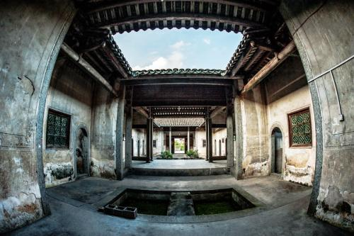

| 简介 | 整体布局 | 特点 | 文化精神 |
|  | 特点
以梅州围龙屋为例，其主要特征主要有： 1、中轴对称，主次有序；以厅堂为中心组织院落。 2、屋前必有半月形池塘，屋后必有半月形化胎，两个半圆相合，形同阴阳两仪的太极图式。两个半圆，围绕着方正的堂屋，寓意于“天圆地方”，将整座屋宇喻为一个小宇宙，体现“天人合一”的哲学思想。 3、客家的风水地理师，往往将堂屋各围龙屋比拟人体，以人体的比例决定整座屋宇的比例及平面关系。 以土楼、围龙屋、殿堂式围屋为代表的客家传统民居，类型不一，风格有异。然而，其坚固性，安全性，封闭性，以及合族聚居性，则是它们突出的共同特点。 坚固性现在的福建、广东一带的圆形、方形土楼，一般都有200－300年乃至500－600年的历史。它们历经风雨洗刷，强烈地震，台风袭击，至今安然无恙，巍然屹立在丛山峻岭之中。 如此坚固的民居，与精心选择屋址，科学的设计，用料及施工方法分不开。现仅从土楼的建筑材料和施工方法作一些说明。 土楼的墙壁，下厚上薄，厚处有的竟达1.5米。夯筑时，先在墙基挖出又深又大的墙沟，夯实在，埋入大石为基，然后用石块和灰浆砌筑起墙基。接着就用夹墙板夯筑墙壁。土墙的原料以当地粘质红土为主，掺入适量的小石子和石灰，经反复捣碎，拌匀，做成俗称的“熟土”。一些关键部位还要掺入适量糯米饭，红糖，以增加其粘性。夯筑时，要往土墙中间埋入杉木枝条或竹片为“墙骨”，以增加其拉力。就这样，经过反复的夯筑，便筑起了有如钢铁混凝土似的的土墙，再加上外面抹了一层防风雨剥蚀的石灰，因而坚固异常，具有良好的防风，抗震能力。据《永定县志》记载，1918年发生大地震，白天柝柝有声，历时20分钟，夜里继续震动，但土楼始终挺立无恙。 安全性 历史上，客家本是中原汉人，他们南迁至闽粤赣边区山区后，为防止土著和盗匪的打劫及猛兽的袭击，他们建造的土楼、围屋，皆防范严密，甚为安全。 例如，宛如古城堡似的土楼，一、二层不设朝外的窗子，或只开设枪眼似的细长石窗，三楼四楼和每个房间都有朝外的大窗，既利于采光，流通空气，又成了了望敌情和向外射击的枪孔。土楼大门的门框，门槛都是条石，门板厚约10厘米。有的大门上斜挖了几个嵌有竹筒的护门孔，倘有土匪攻门，可往下射击和浇开水。有的土楼大门还安装了防火水柜、水槽，若来犯之敌放火烧门，只要一按开关，水便顺门而下，以灭火护门。土楼本来已坚固异常，但为防万一，有的土楼还夯筑了夹墙。万一外墙被炮火轰开，土楼仍有夹墙支撑，安然无恙。土楼内有各种齐全的生活设施：设于天井的深水井，是被围困时的水源，楼内有砻、碓等加工粮食的设备。这一切都使匪敌久攻不下。至于那些四角建有高耸碉楼的“四点金”，更是领盗匪望而却步。 封闭性 客家民居，不论土楼还是围屋，五凤楼，四角楼，里面的每一个房间，厅堂，天井，都以走廊，巷道，楼梯相通，住户生活方便。然而，它们对外则是全封闭的。土楼一般只开一个正门一个后门，或一个正门两个侧门，围屋，围龙屋的各横屋，半环形围屋，皆设有门楼。万一有盗匪打劫，只要把门一关，便封闭得严严实实的。 合族聚居性 客家土楼，围龙屋，五凤楼等，一般都规模庞大。永定“承启楼”有300多个房间，面积5376平方米。“遗经楼”有五层楼，面积10336平方米，光是厅堂便有51个。难怪日本一位建筑学教授看了永定土楼后写道：“这动人的客家土楼，与其说是一幢庞大的住宅，不如说是一座小城市”。 如此庞大的民居，正是为了适应聚族而居的特点。“承启楼”最多时曾住80户，600多人。家乡罗氏围龙屋，有300多个房间，为罗氏50户人家，350人所共居。住户虽多，但由于房间、厅堂、天井也多，能以厅堂及天井和若干房间组成一个个生活小单元，又令住户各各得其所，显得幽雅，舒适。 值得一提的是土楼、围屋的“心脏”——祖宗祠堂。这里是族长聚集各户家长议事的地方。逢年过节，合族的每家都挑着各种供品，到这里祭祀祖先。男儿娶亲，须在祠堂拜天地，叩祖先，宴宾客。闺女出嫁，向列祖辞行后，方可罩上盖头，踏着象征团圆的大圆匾出阁。老人谢世，祠堂成了举哀发丧的灵堂。就这样，一座祠堂将合族融洽地凝聚在一起，共享天伦之乐。 |